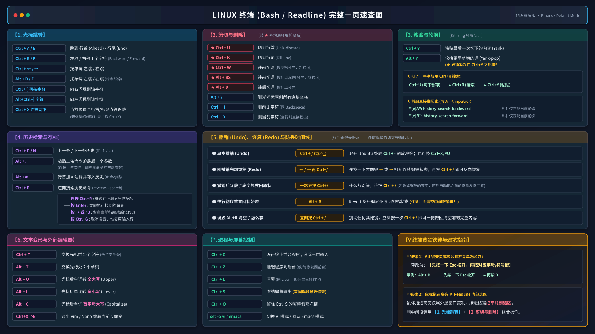

每天在 Linux 终端里敲命令，如果遇到输错参数还在一格一格按退格键、移动光标全靠长按左右方向键、找历史命令只会狂按上方向键，那你其实只发挥了终端不到 20% 的效率。
无论是默认的 Bash，还是 Zsh、Python 交互式解释器、MySQL 客户端 乃至 GDB，底层默认都遵循 GNU Readline (Emacs 模式) 的键位规范。只需掌握一套核心肌肉记忆，所有命令行工具都能瞬间丝滑提速。

1. 光标跳转：告别长按方向键
在长命令行中穿行，核心原则是按行首尾跳、按单词跳、按目标字符闪现：
Ctrl + A/Ctrl + E：瞬间跳到行首 (Ahead) 或 行尾 (End)。忘加sudo时，按一下Ctrl + A补上即可。Ctrl + B/Ctrl + F：左移 / 右移 1 个字符（Backward / Forward），双手无需离开主键盘区去摸方向键。Ctrl + ← / →与Alt + B / F：按单词左右跳跃。其中Alt + B / F遇到标点或斜杠即停，非常适合在长路径或 URL 中精准定位。Ctrl + ]再按字符：向右直接闪现到该字符处；Alt + Ctrl + ]再按字符则是向左闪现。Ctrl + X连按两下：在「当前光标位置」与「行首/上次标记点」之间一键往返跳。改完行首参数后按两下即可瞬间回到刚才的位置。
2. 剪切与删除：理解粗细粒度与环形剪贴板
Readline 中的大段删除本质上都是「剪切 (Kill)」——凡是下表中带 ★ 的操作，切下的文本都会自动进入内部的 环形剪贴板 (Kill-ring)，随时可以粘贴复用：
★ Ctrl + U/★ Ctrl + K：从光标处直接切到行首 / 切到行尾。★ Ctrl + Wvs★ Alt + Backspace：同样是往前切词，Ctrl + W以空格为分界（粗粒度，一把切掉整条路径）；而Alt + Backspace以标点/斜杠为分界（细粒度，只切掉路径最后一级目录），改路径时极其顺手。★ Alt + D：往后切掉一个单词（按标点分界）。Alt + \：一键删光光标两侧所有连续空格。Ctrl + H/Ctrl + D：分别对应删除前一个字符（同 Backspace）与删除当前字符（注意：在空行按Ctrl + D会发送 EOF 直接登出终端）。
3. 粘贴轮换与高频实战连招
切下来的内容不仅能贴回来，还能像历史栈一样轮换：
Ctrl + Y(Yank)：把最后一次切下的内容粘贴到光标处。Alt + Y(Yank-pop)：紧跟在Ctrl + Y之后按，可依次往前轮换更早切下的历史片段。
实战连招 1：打了一半命令，突然想先用
直接按
Ctrl + R 查历史怎么办？直接按
Ctrl + U（将已敲的半截命令切入剪贴板暂存）──► 按 Ctrl + R 搜索或执行前置命令 ──► 按 Ctrl + Y 原封不动把刚才那半截命令贴回来继续写。实战连招 2：输入前缀直接按上下键过滤历史——将以下两行写入 ~/.inputrc 后重新登录，输入 docker 再按 ↑ 就只会翻出以 docker 开头的历史命令：
"\e[A": history-search-backward # ↑ 仅匹配当前已输入前缀
"\e[B": history-search-forward # ↓ 仅匹配当前已输入前缀4. 历史检索与命令存档
Alt + .：一键粘贴上一条命令的最后一个参数（连按可依次往上翻更早命令的末尾参数）。刚执行完mkdir -p /var/www/demo/conf，下一行敲cd后直接按Alt + .即可自动补齐长路径。Alt + #：在当前行首自动加上#注释并回车存入历史记录。当长命令敲了一半需要先看眼别的配置时，按Alt + #即可安全存档。Ctrl + R逆向搜索的四条出路：连按Ctrl + R继续往上翻更早匹配项；按Enter立即执行；按→（或Ctrl + J）留在当前行继续修改参数；按Ctrl + G取消搜索并恢复原输入行。
5. 撤销 (Undo)、恢复 (Redo) 与防丢时间线
Readline 维护着一条线性的操作账本，任何误删误改都有后悔药：
- 单步撤销 (Undo)：按
Ctrl + /（或Ctrl + _），避开了 Ubuntu 等终端中Ctrl + -缩小字体的快捷键冲突。 - 撤销过头想恢复 (Redo)：先按一下方向键
←或→打断连续撤销状态，再按Ctrl + /，撤销方向就会反转变为恢复。 - 整行重置与误触急救：
Alt + R会将整行彻底还原回初始状态；如果误触了Alt + R导致辛辛苦苦改好的长命令瞬间消失，千万别碰其他键，立刻按一次Ctrl + /就能把清空前的完整内容一把救回。
6. 文本变形与外部编辑器召唤
Ctrl + T/Alt + T：交换光标前两个字符（把sl秒改成ls）或交换两个相邻单词的位置。Alt + U/Alt + L/Alt + C：将光标后的单词快速转为全大写、全小写或首字母大写。Ctrl + X, Ctrl + E：编写复杂的循环、多行 JSON 请求或长管道命令时，按此组合键会直接调出$EDITOR（如 Vim 或 Nano）编辑当前命令，保存退出后自动执行。
7. 进程控制与屏幕假死急救
Ctrl + C强行终止前台程序或放弃当前输入行；Ctrl + Z将前台程序挂起到后台（输入fg即可恢复回前台）。Ctrl + L清屏：效果同clear，但完整保留当前正在敲的命令行。Ctrl + S与Ctrl + Q：新手常因习惯性按Ctrl + S保存而触发终端 XOFF 流控，导致屏幕输出彻底冻结「假死」；此时只需按一下Ctrl + Q即可立即解冻恢复。
8. 两条终端黄金铁律
💡 铁律 1：Alt 键失灵或唤起终端顶栏菜单怎么办？
所有
💡 铁律 2：鼠标拖选高亮 ≠ Readline 内部选区
终端里的鼠标拖选仅属于外层窗口的复制高亮，按退格键绝不会删掉鼠标框选的文字。想要精准删改中间某一段，请始终使用「1. 光标跳转 + 2. 剪切与删除」组合操作。
所有
Alt + 键 操作，在底层完全等价于「先按一下 Esc 键松开，再按对应字母/符号键」。例如 Alt + B 只需先单击 Esc 松手，再按 B，在任何远程 SSH 终端上都百试百灵。💡 铁律 2：鼠标拖选高亮 ≠ Readline 内部选区
终端里的鼠标拖选仅属于外层窗口的复制高亮，按退格键绝不会删掉鼠标框选的文字。想要精准删改中间某一段，请始终使用「1. 光标跳转 + 2. 剪切与删除」组合操作。